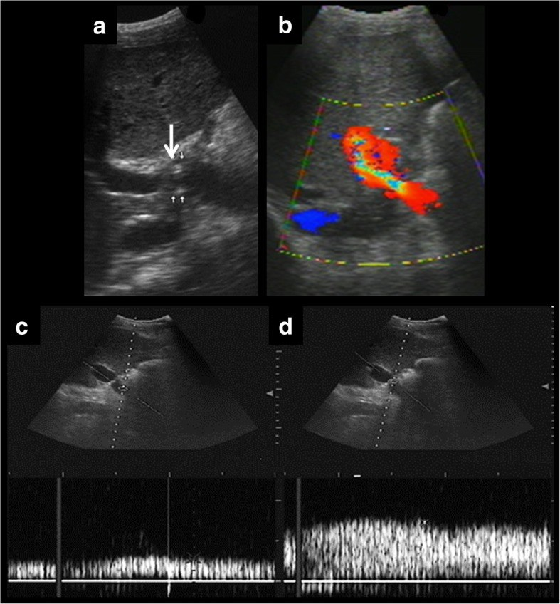
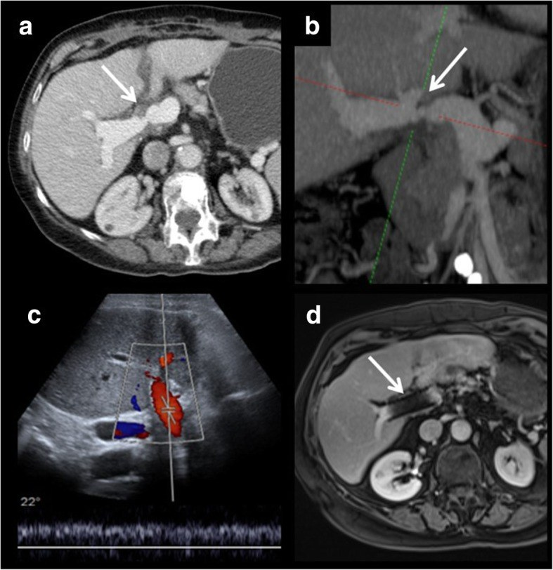
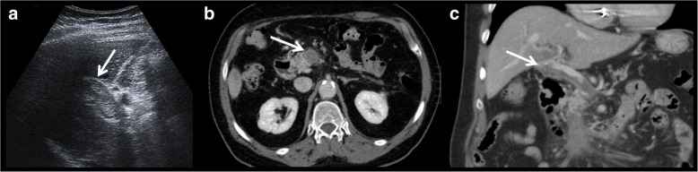

1827 — Hẹp tĩnh mạch cửa sau ghép gan / Portal vein stenosis after liver transplantation
Tags: pattern:hep pattern:hep-dong-mach vung:gan vung:o-bung score:PSV-ratio protocol:Doppler-sieu-am protocol:CT-tinh-mach-cua protocol:MRCP incidentaloma:khong
Mức chắc chắn (certainty): tổng hợp y văn (literature synthesis) — 1 bài tổng quan hình ảnh có ảnh Doppler/CT kinh điển (Insights Imaging 2019, PMC6694376, CC BY 4.0), 1 đoàn hệ nhi 92 ca ghép gan với protocol Doppler chuẩn hóa (Ultrasound Int Open 2022, PMC9668490, CC BY 4.0) và 2 loạt can thiệp nhi khoa (30 trẻ — Ann Transplant 2017, PMC12577528; 67 trẻ/884 ca ghép — Ann Transplant 2025, PMC12377406). Nhóm không có bệnh nhân của mình; chỗ hai nguồn lệch nhau (ngưỡng vận tốc, tỉ lệ hẹp lại) được ghi là mâu thuẫn nguồn, không chọn bừa.
Câu chốt: hẹp tĩnh mạch cửa (portal vein stenosis, PVS) sau ghép gan không phải biến chứng hiếm ở trẻ — 7,6% (67/884) ca ghép nhi trong một trung tâm, khởi phát trung bình 119,3 ngày (8–786 ngày) sau ghép (PMC12377406). Ba số phải thuộc: (1) ngưỡng Doppler PSV tại miệng nối > 125 cm/s hoặc tỉ lệ chỗ hẹp/trước hẹp ≥ 3–4 (hai nguồn ghi 3 và 4 — xem mục 4.2); (2) chênh áp ≥ 5 mmHg là chỉ định can thiệp kể cả khi chưa có triệu chứng (PMC12577528); (3) nong bóng đơn thuần giải quyết 81,25% nhưng 18,75% hẹp lại (trung bình 162,8 ngày), và cầu nối tĩnh mạch cửa (PVB) + lệch cỡ mạch là hai yếu tố dự báo hẹp lại (OR 2,3 và 5,7) (PMC12377406). Nghĩa là: chẩn đoán bằng Doppler, quyết định bằng chênh áp, theo dõi sau nong bằng Doppler lặp lại — không chờ triệu chứng.
1. Tổng quan bệnh học – cơ chế hình ảnh
1.1 Vì sao tĩnh mạch cửa là "điểm yếu" của mảnh ghép
- Gan nhận ~75% lưu lượng máu qua tĩnh mạch cửa nhưng cửa chỉ mang ~50% oxy; dòng cửa là dòng áp lực thấp, vận tốc thấp, liên tục, hướng về gan (hepatopetal). Vì áp lực thấp, một vòng xơ vài mm tại miệng nối cũng đủ làm mất gradient — khác động mạch gan (áp lực cao, hẹp phải rất nặng mới mất dòng).
- Hẹp cửa → tăng áp cửa sau ghép: giãn tĩnh mạch thực quản, cổ trướng, lách to, giảm tiểu cầu, và về lâu dài suy mảnh ghép. Loạt 32 ca của Gao cho thấy sau khi giải phóng hẹp, tiểu cầu tăng từ 128,56 ± 62,84 lên 163,65 ± 70,49 × 10⁹/L (p < 0,05) — bằng chứng rằng giảm tiểu cầu ở bệnh nhân ghép gan có thể do hẹp cửa chữa được, không phải di chứng cố định (PMC12577528).
- Hẹp kéo dài còn được cho là dẫn tới hội chứng gan–phổi (HPS) và tăng áp phổi làm mất khả năng ghép lại — đây là lý do phải can thiệp sớm, trước khi có triệu chứng (PMC12577528 dẫn Ueda). Bài 196 mô tả đúng bệnh cảnh "giảm oxy dai dẳng sau ghép gan" mà nguyên nhân có thể nằm ở dòng cửa, không chỉ ở nhu mô gan.
1.2 Vì sao hẹp hay nằm ĐÚNG miệng nối — và vì sao trẻ nhiều hơn người lớn
- Biến chứng mạch máu sau ghép gan gặp ở ~7% ca ghép gan người chết não và ~13% ca ghép gan sống (PMC6694376), nhưng biến chứng tĩnh mạch cửa < 2% ở người lớn. Ở trẻ, tỉ lệ cao hơn hẳn: 2–14% ở nhóm ghép giảm thể tích/ghép gan sống (PMC12577528 dẫn y văn), và 7,6% (67/884) trong đoàn hệ 2020–2024 (PMC12377406).
- Lý do giải phẫu: tĩnh mạch cửa trẻ rất nhỏ — trong đoàn hệ 67 ca, đường kính cửa người nhận 0,41 ± 0,15 cm so với người cho 0,69 ± 0,23 cm, tức lệch cỡ trung bình 88,5 ± 112,21% (1–792%) (PMC12377406). Miệng nối nhỏ + lệch cỡ + xoắn cuống mạch là ba cơ chế tạo hẹp.
- Về mô bệnh: hẹp muộn thường do tăng sinh nội mạc/xơ hóa tại miệng nối (intimal hyperplasia/fibrosis); hẹp sớm do gập góc, xoắn, huyết khối, hoặc hẹp do thiếu mô (kỹ thuật miệng nối). Bài học hình ảnh: vị trí hẹp = vị trí miệng nối, nên phải biết kiểu miệng nối của từng bệnh nhân (tận–tận, mảnh ghép cầu nối, patch tĩnh mạch chậu) trước khi đọc siêu âm.
1.3 Vật lý: vì sao "vận tốc tăng" và "chênh áp" là hai câu chuyện khác nhau
- Theo nguyên lý liên tục, cùng một lưu lượng qua tiết diện hẹp hơn → vận tốc tăng theo bình phương bán kính. Doppler đo vận tốc, không đo áp lực; vận tốc còn phụ thuộc góc đầu dò (cos θ). Vì vậy vận tốc tuyệt đối dễ sai, còn tỉ lệ vận tốc chỗ hẹp/trước hẹp ít phụ thuộc góc hơn — đây là lý do các protocol dùng cả hai.
- Ước lượng chênh áp bằng Bernoulli rút gọn: ΔP (mmHg) ≈ 4 × V² (V tính bằng m/s). Với V = 1,25 m/s (125 cm/s) → ΔP ≈ 6,25 mmHg; với V = 2 m/s → 16 mmHg. Con số này khớp một cách hợp lý với ngưỡng can thiệp chênh áp ≥ 5 mmHg mà Gao dùng (PMC12577528) — đây là suy luận vật lý của nhóm biên soạn, không phải kết luận của bài gốc.
- Hệ quả thực hành: một vận tốc "dưới ngưỡng" không loại trừ hẹp có ý nghĩa huyết động. Trong loạt của Gao, vận tốc cửa trước nong trung bình chỉ 114,73 ± 31,37 cm/s (73–174) — tức trung bình nằm dưới ngưỡng 125 cm/s — nhưng chênh áp trung bình 10,97 ± 4,25 mmHg và tất cả đều được can thiệp (PMC12577528). Đây là mâu thuẫn quan trọng giữa "ngưỡng vận tốc" và "ngưỡng chênh áp": vận tốc dùng để sàng lọc, chênh áp dùng để quyết định.
1.4 Thời điểm xuất hiện — "cửa sổ" theo dõi
- Trung bình 119,3 ± 126,3 ngày (8–786 ngày) sau ghép; 65,7% là hẹp đơn thuần, phần còn lại tắc (PMC12377406).
- Loạt 30 trẻ: 9,15 ± 8,86 tháng (0,5–37 tháng), chỉ 2 ca sớm (một ca 2 tuần, một ca 2 tháng), 28 ca còn lại sau 3 tháng (PMC12577528).
- Vì vậy theo dõi phải kéo dài ít nhất 1 năm, không chỉ tuần đầu: trong đoàn hệ 92 ca ghép nhi, 84,6% biến chứng mạch được phát hiện trong mổ hoặc tuần đầu, nhưng 15,4% xuất hiện sau ngày 8 — và với tĩnh mạch cửa, 73,1% (19/26) được phát hiện trong tuần đầu, phần còn lại muộn hơn (PMC9668490).
2. Mẫu hình + chẩn đoán phân biệt theo vị trí (gamut)
2.1 Gamut theo cơ chế tại miệng nối
- Hẹp xơ/tăng sinh nội mạc thật (true anastomotic stenosis) — hẹp khu trú, thành dày, không thay đổi theo nhịp thở; thường muộn (tháng 3–12).
- Hẹp do lệch cỡ mạch (size-mismatch narrowing) — chỗ nối hình phễu nhẵn giữa cửa nhỏ của nhận và cửa lớn của cho; không có chênh áp đáng kể khi nghỉ, nhưng là tiền đề của hẹp thật (PMC6694376).
- Gập/xoắn cuống mạch (kinking/torsion) — hẹp khi gập, rộng ra khi đổi tư thế; trong loạt Gao có 3 ca được xác định là "portal vein angulation" và phải đặt stent vì nong bóng không cải thiện (PMC12577528).
- Huyết khối cửa (portal vein thrombosis, PVT) — vật liệu trong lòng mạch, không có dòng, hoặc khiếm khuyết bắt thuốc trên CT; hẹp và huyết khối là cùng một phổ bệnh (PMC6694376).
- Chèn ép từ ngoài (extrinsic compression) — tụ dịch/máu tụ/áp-xe quanh miệng nối; hẹp dài, bờ ngoài, thay đổi khi tụ dịch nhỏ đi.
- Hẹp cầu nối tĩnh mạch (PVB) — miệng nối dùng mạch ghép (tĩnh mạch chậu) khi cửa nhận quá nhỏ/ngắn; đây là yếu tố nguy cơ độc lập của hẹp lại (OR 2,3) (PMC12377406).
- Biến đổi dạng hang (cavernous transformation) — hẹp mạn tính → lưới tĩnh mạch bàng hệ quanh rốn gan; trong 67 ca có 3 ca không thể đưa dây dẫn qua, phải ghép lại hoặc chờ ghép (PMC12377406).
2.2 Gamut theo hình thái trên Doppler (dùng khi đang cầm đầu dò)
- Hẹp khu trú có ý nghĩa huyết động: PSV tại chỗ hẹp cao, aliasing, sau hẹp mất pha dao động, giãn tĩnh mạch trước hẹp, chênh áp.
- Hẹp không có ý nghĩa: lệch cỡ nhẵn, không giãn trước hẹp, tỉ lệ < 3 và gradient < 5 mmHg.
- Tắc hoàn toàn: không có phổ Doppler trong lòng cửa, vật liệu sinh hồi âm trong lòng, bàng hệ rốn gan.
- Hẹp + huyết khối: hẹp tại miệng nối kèm khiếm khuyết trong lòng — cần CT/MR để phân biệt huyết khối mới (mềm, không ngấm) với giả u (pseudothrombus do dòng chảy chậm/không đều).
3. Bảng so sánh phân biệt (ma trận đối chiếu)
| Thực thể (entity) | Hình ảnh điển hình (US/CT/MRI) | Chốt vào (rule-in) | Chốt loại (rule-out) | Gợi ý xác nhận |
|---|---|---|---|---|
| Hẹp miệng nối thật (PVS) | Hẹp khu trú đúng miệng nối; PSV > 125 cm/s; tỉ lệ hẹp/trước hẹp ≥ 3–4; giãn cửa trước hẹp; chênh áp ≥ 5 mmHg | Tỉ lệ ≥ 3 + giãn trước hẹp + gradient ≥ 5 mmHg | Tỉ lệ < 3 và gradient < 5 mmHg; hẹp nhẵn kiểu lệch cỡ | Doppler lặp + CT tĩnh mạch cửa; đo áp lực qua catheter khi can thiệp |
| Lệch cỡ mạch (pseudo-stenosis) | Chỗ nối hình phễu nhẵn, đối xứng; không giãn trước hẹp; không có gradient | Đường kính nhận < cho + hình phễu nhẵn + gradient < 5 mmHg | Bờ không đều, giãn trước hẹp, gradient ≥ 5 → hẹp thật | So phim mổ/ghi chú kỹ thuật; Doppler 24–48 giờ sau |
| Huyết khối cửa (PVT) | Vật liệu sinh hồi âm trong lòng; không có phổ Doppler; CT: khiếm khuyết trong lòng, không ngấm | Không có dòng + khiếm khuyết bắt thuốc | Có dòng quanh vật liệu + ngấm thuốc → u/giả u | CT/MR; CEUS; can thiệp lấy huyết khối |
| Gập/xoắn cuống | Hẹp thay đổi theo tư thế/nhịp thở; góc gập rõ trên MPR | Hẹp thay đổi + không có xơ tại chỗ | Hẹp cố định mọi tư thế → hẹp thật | CT MPR; Doppler 2 tư thế |
| Chèn ép từ ngoài | Hẹp dài, bờ ngoài, có khối/tụ dịch kế cận; hết khi tụ dịch tiêu | Khối kế cận + hẹp dài + hết sau khi khối nhỏ | Hẹp đúng miệng nối, không khối → hẹp thật | CT/MR; theo dõi tụ dịch |
| Hẹp cầu nối (PVB) | Hẹp tại đoạn mạch ghép; thường kèm lệch cỡ; tiền sử PVB | Tiền sử PVB + hẹp tại đoạn ghép | Tiền sử nối tận–tận không có mạch ghép | Đối chiếu hồ sơ mổ; CT |
| Biến đổi dạng hang | Lưới mạch bàng hệ quanh rốn; cửa chính hẹp/tắc mạn; lách to | Lưới bàng hệ + cửa chính không thấy | Cửa chính còn dòng, chỉ hẹp khu trú | CT/MR; cân nhắc ghép lại |
4. Protocol chụp + phân độ và xử trí
4.1 Protocol Doppler sau ghép gan (lấy theo hai protocol đã công bố)
- Lịch: trong mổ + ngay sau đóng bụng (ngày 0); hàng ngày ngày 1–7; 1 tháng, 3 tháng, 12 tháng (PMC9668490). Protocol khác: 24–48 giờ, ngày 7, tháng 1 và tháng 3 (PMC6694376). Điểm chung: tuần đầu là cửa sổ vàng, nhưng phải theo tới 1 năm.
- Cách đo: lấy mẫu tại miệng nối; nếu không xác định được miệng nối, lấy chỗ hẹp nhất của cửa rốn; nếu có mạch ghép/patch, lấy chỗ hẹp nhất của đoạn ghép (PMC9668490). Luôn ghi PSV tại chỗ hẹp, PSV trước hẹp, tỉ lệ, và phổ ở nhánh trong gan.
- Góc: giữ góc < 60°, ưu tiên tỉ lệ hơn vận tốc tuyệt đối; nếu cửa sổ siêu âm kém → CEUS/CT.
- Khi nào chụp CT/MR: Doppler bất thường, không kết luận được, hoặc chức năng gan xấu đi; CT tĩnh mạch cửa để đo đường kính, đánh giá huyết khối, và quy hoạch can thiệp; MRI hữu ích cho mô mềm nhưng stent gây nhiễu kim loại (PMC6694376).
4.2 Ngưỡng chẩn đoán — và chỗ hai nguồn lệch nhau
| Thông số | Ngưỡng | Nguồn |
|---|---|---|
| PSV tại miệng nối | > 125 cm/s | PMC6694376; PMC9668490 |
| Tỉ lệ PSV chỗ hẹp/trước hẹp | ≥ 3 | PMC6694376 |
| Tỉ lệ PSV chỗ hẹp/trước hẹp | ≥ 4 | PMC9668490 |
| Chênh áp qua chỗ hẹp | ≥ 5 mmHg → điều trị | PMC12577528 |
| Đường kính cửa hẹp | 3,25 ± 0,64 mm (1,5–4 mm) trong loạt 24 ca | PMC12577528 |
| Giá trị dự báo dương của Doppler cho biến chứng cửa | 88,5% (23/26); 3 dương tính giả | PMC9668490 |
- Mâu thuẫn nguồn có ý nghĩa: tỉ lệ ≥ 3 và ≥ 4 cùng tồn tại; ≥ 4 đặc hiệu hơn nhưng bỏ sót nhiều hơn, ≥ 3 nhạy hơn. Nhóm biên soạn khuyến nghị: dùng ≥ 3 để sàng lọc, xác nhận bằng gradient khi can thiệp — đây là suy luận, không phải khuyến cáo chính thức.
- Dương tính giả: 3 ca hẹp cửa trên Doppler (2 ca ngay sau đóng bụng, 1 ca tháng thứ 4) được CT loại trừ (PMC9668490) — không can thiệp dựa trên một lần siêu âm.
4.3 Điều trị: nong bóng trước, stent khi thất bại, mổ/ghép lại khi hết đường
flowchart TD
A["Doppler: PSV miệng nối > 125 cm/s<br/>hoặc tỉ lệ ≥ 3"] --> B{"Xác nhận bằng CT/MR<br/>và đo chênh áp?"}
B -->|"Gradient < 5 mmHg"| C["Theo dõi, Doppler 1-3 tháng"]
B -->|"Gradient ≥ 5 mmHg"| D["Nong bóng qua da (PTA)"]
D --> E{"Hẹp lại?"}
E -->|"Không"| F["Theo dõi Doppler định kỳ"]
E -->|"Có"| G["Nong bóng lần 2 hoặc đặt stent"]
G --> H{"Thất bại / huyết khối stent / biến đổi dạng hang"}
H -->|"Không"| F
H -->|"Có"| I["Mổ sửa miệng nối hoặc ghép lại"]
- Kết quả nong bóng (PTA) ở trẻ: 81,25% (52/64) khỏi sau một lần nong; 12/64 (18,75%) hẹp lại, trung bình 162,8 ± 153,4 ngày (58–626); trong 12 ca hẹp lại, 4 ca đặt stent, 7 ca nong lần 2 (4 khỏi, 3 phải stent), 1 ca huyết khối trong stent → ghép lại và tử vong (PMC12377406).
- Hiệu quả huyết động ngay sau nong: vận tốc cửa 52,8 ± 28,7 → 31,1 ± 12,1 cm/s; đường kính 0,21 ± 0,06 → 0,51 ± 0,15 cm (p < 0,001) (PMC12377406). Loạt khác: 114,73 ± 31,37 → 39,43 ± 13,23 cm/s; đường kính 3,25 → 7,54 mm; gradient 10,97 → 1,63 mmHg; tiểu cầu 128,56 → 163,65 × 10⁹/L (PMC12577528).
- Độ bền: thông suốt sau điều trị lần đầu 89,29% (25/28), sau lần hai 100% (28/28) (PMC12577528); sống 1 năm 100%, 3 năm 95%; sống mảnh ghép 1 năm 100%, 3 năm 91% (PMC12377406).
- Yếu tố dự báo hẹp lại: PVDr (OR 5,7) và PVB (OR 2,3); mô hình logistic AUC 0,778, độ chính xác 89,1%, độ nhạy 66,7%, độ đặc hiệu 92,3% (PMC12377406). Ý nghĩa lâm sàng: bệnh nhân có mạch ghép cầu nối hoặc lệch cỡ lớn cần theo dõi sát hơn và hạ ngưỡng chụp lại.
- Chỉ định can thiệp: chênh áp ≥ 5 mmHg → điều trị kể cả không triệu chứng; không chờ cổ trướng/chảy máu (PMC12577528). Can thiệp sớm cũng tránh biến đổi dạng hang khiến không còn đường vào.
5. Biến thể bình thường và cạm bẫy
- Aliasing ngay sau mổ là bình thường: dòng xoáy tại miệng nối trong 24–72 giờ đầu gặp ở nhiều bệnh nhân; không gọi hẹp nếu không có tăng vận tốc khu trú + giãn trước hẹp + gradient. Đây là lý do protocol phải lặp lại (PMC6694376).
- Lệch cỡ mạch: hẹp nhẵn hình phễu giữa cửa nhận nhỏ và cửa cho lớn là bình thường về giải phẫu, nhưng là yếu tố nguy cơ — theo dõi, không can thiệp ngay.
- Vận tốc phụ thuộc góc: đặt đầu dò song song hoặc vuông góc làm vận tốc đo thấp hơn thực; vì vậy tỉ lệ và phổ đáng tin hơn vận tốc tuyệt đối (PMC6694376).
- Vận tốc "bình thường" mà vẫn hẹp: loạt Gao có trung bình 114,73 cm/s trước nong — dưới ngưỡng 125 cm/s (PMC12577528). Không loại trừ hẹp chỉ vì PSV < 125 cm/s nếu có giãn trước hẹp/giảm tiểu cầu/cổ trướng.
- Chức năng gan "đang cải thiện" không loại trừ hẹp: Gao ghi rõ nhiều ca vẫn có xu hướng cải thiện men gan dù hẹp (PMC12577528) — không dùng men gan để trấn an.
- Nhiễu kim loại của stent trên MRI: sau đặt stent, MRI có thể cho tín hiệu trống quanh stent giả hẹp; dùng Doppler/CT để đánh giá (PMC6694376, Fig. 11).
- Bỏ sót huyết khối mới: huyết khối non sinh hồi âm thấp, dễ bị coi là "dòng chảy chậm"; nếu không thấy phổ rõ → CEUS/CT trước khi kết luận.
- "Satisfaction of search": thấy hẹp cửa là dừng, bỏ sót hẹp động mạch gan hoặc hẹp đường mật đi kèm — trong cùng một lần siêu âm phải đọc đủ 4 miệng nối (động mạch, cửa, đường mật, TM gan/IVC).
6. Tự lượng giá — Blind Quiz
Ca 1 — Trẻ 8 tháng sau ghép gan sống, cổ trướng tăng, tiểu cầu giảm. Nhìn phổ Doppler trước, mô tả trước.

- Gợi ý lâm sàng: ghép gan sống 8 tháng, bụng to, tiểu cầu 90 × 10⁹/L, men gan bình thường.
- Câu hỏi: (1) Khung nào là chỗ hẹp, khung nào là trước hẹp? (2) Dấu hiệu nào chứng minh hẹp có ý nghĩa huyết động? (3) Hai phép đo nào nên ghi vào báo cáo?
Bấm để hiện đáp án (findings + chẩn đoán)
- Findings: (a) B-mode thấy nhiều chỗ hẹp trên tĩnh mạch cửa (mũi tên trắng) và (b) dòng xoáy/aliasing tại chỗ hẹp; (c) phổ trước hẹp: vận tốc thấp, phổ yếu; (d) phổ tại chỗ hẹp: vận tốc tăng cao (đỉnh > 125 cm/s trong ca gốc), phổ liên tục mất pha dao động.
- Chẩn đoán: hẹp tĩnh mạch cửa tại miệng nối — cơ chế xơ/tăng sinh nội mạc tại miệng nối, gây tăng áp cửa (cổ trướng, giảm tiểu cầu).
- Hai phép đo phải ghi: PSV tại chỗ hẹp và tỉ lệ PSV chỗ hẹp/trước hẹp (ca gốc: tỉ lệ > 3); kèm đường kính và chênh áp khi can thiệp.
- Nguồn ảnh: Delgado-Moraleda JJ, Ballester-Vallés C, Marti-Bonmati L, Insights Imaging 2019;10:78, PMC6694376 Fig. 10 — CC BY 4.0, nguyên bản.
Ca 2 — Bệnh nhân ghép gan 6 tháng, Doppler nghi hẹp cửa. Xem CT và kết quả sau can thiệp.

- Câu hỏi: (1) Hẹp nằm ở đâu trên CT axial và MPR? (2) Sau stent, vì sao MRI có thể không đánh giá được lòng stent? (3) Theo dõi sau can thiệp bằng gì?
Bấm để hiện đáp án
- Findings: (a) CT axial và (b) MPR cho thấy hẹp khu trú tại miệng nối tĩnh mạch cửa; (c) sau đặt stent, Doppler kiểm tra cho dòng cửa bình thường; (d) MRI kiểm tra cho thấy nhiễu kim loại của stent nhưng ngấm thuốc bình thường trước và sau stent.
- Chẩn đoán: hẹp miệng nối có ý nghĩa huyết động, được đặt stent sau khi nong bóng/thất bại (tùy ca).
- Vì sao MRI hạn chế: stent kim loại tạo vùng tín hiệu trống quanh lòng mạch (susceptibility artifact) — dễ đọc nhầm là hẹp/tắc; Doppler là phương tiện theo dõi chính, CT khi cần.
- Nguồn ảnh: PMC6694376 Fig. 11 — CC BY 4.0, nguyên bản.
Ca 3 — Bệnh nhân ghép gan ngày thứ 2, siêu âm không thấy dòng cửa. Xem ảnh CT.

- Câu hỏi: (1) Dấu hiệu trên siêu âm và CT? (2) Phân biệt với hẹp đơn thuần? (3) Ngưỡng thời gian quyết định mổ lại?
Bấm để hiện đáp án
- Findings: (a) siêu âm: vật liệu sinh hồi âm trong lòng tĩnh mạch cửa, không thấy phổ; (b) CT axial: khiếm khuyết trong lòng tại miệng nối; (c) MPR xác định độ dài huyết khối.
- Chẩn đoán: huyết khối tĩnh mạch cửa — hẹp và huyết khối là cùng một phổ (hẹp tiến triển thành tắc).
- Ngưỡng thời gian: huyết khối trong 72 giờ đầu → mổ sửa miệng nối; sau 72 giờ → tiêu sợi huyết/nong/stent qua da, mổ khi thất bại (PMC6694376).
- Nguồn ảnh: PMC6694376 Fig. 9 — CC BY 4.0, nguyên bản.
Bài liên quan chéo
- 196 – HPS tồn tại sau ghép gan (giảm oxy dai dẳng sau ghép — nguyên nhân có thể từ dòng cửa)
- 176 – TIPS/DIPS theo dõi shunt (bệnh cảnh tăng áp cửa và theo dõi shunt)
- 1906 – Hẹp đường ra tĩnh mạch gan sau ghép gan (hẹp phía sau gan — cùng nhóm biến chứng mạch máu)
- 1913 – Hẹp/huyết khối động mạch gan sau ghép
- 1914 – Suy chức năng mảnh ghép sớm
- 117 – Tương tác thuốc và theo dõi tacrolimus
Ảnh
- 3 ảnh Doppler/CT từ PMC6694376 (CC BY 4.0), nguyên bản, không crop/ghép; nguồn + giấy phép từng file trong
images/CREDITS.md. - Không dùng ảnh từ bài CC BY-NC-ND (PMC12377406, PMC12577528) — chỉ dùng số liệu.
Không dùng để chẩn đoán độc lập khi chưa có người hướng dẫn.